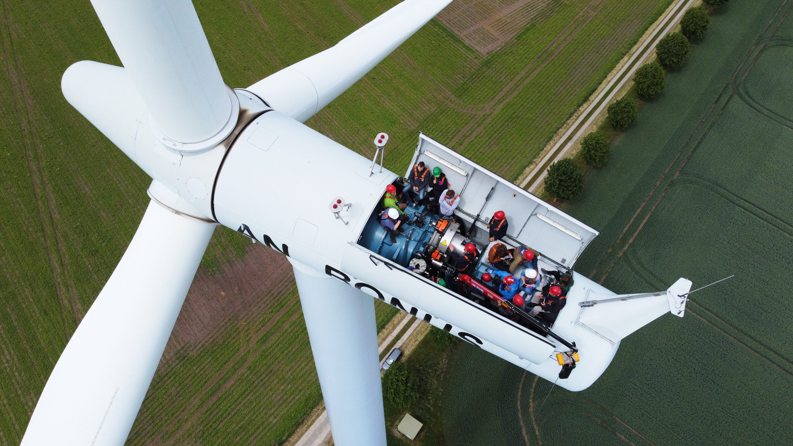
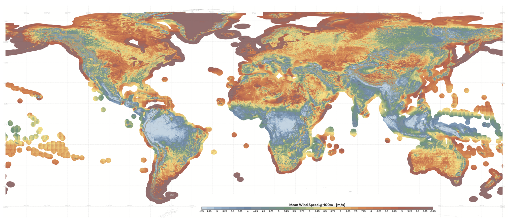
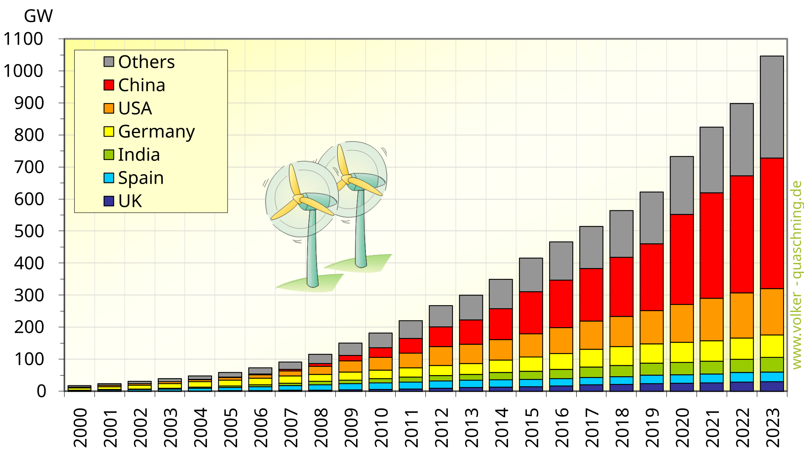
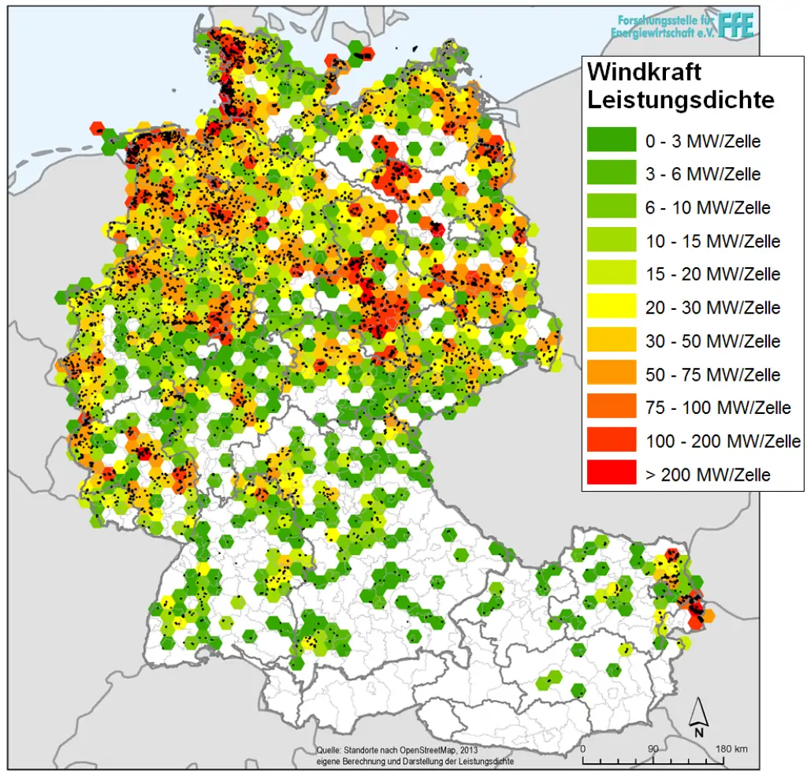

Onshore-Windkraft
Standort: auf dem Land, z. B. Felder, Höhenzüge, windreiche Ebenen.
Typisch: leichter erreichbar und günstiger zu bauen, aber oft Konflikte mit Anwohnern und Landschaftsschutz.
Physik | Klasse 8


| Symbol | Bedeutung | Einheit |
|---|---|---|
| P | elektrische Leistung | W |
| ρ | Dichte der Luft, ungefähr 1,2 | kg/m³ |
| A | Rotorfläche | m² |
| v | Windgeschwindigkeit | m/s |
| η | Wirkungsgrad der Anlage | ohne Einheit |


| Windpark | Typ | Land/Region | Leistung |
|---|---|---|---|
| Gansu Wind Farm | Onshore | China | mehrere GW |
| Alta Wind Energy Center | Onshore | USA | ca. 1,5 GW |
| Hornsea | Offshore | Großbritannien/Nordsee | mehrere GW |
| Borkum Riffgrund | Offshore | Deutschland/Nordsee | mehrere 100 MW |
| Beispiel regionaler Windpark | Onshore | Deutschland | z. B. 30–100 MW |
Die Leistung einer Windkraftanlage steigt nicht gleichmäßig, sondern sehr stark mit der Windgeschwindigkeit. Unterhalb der Einschaltgeschwindigkeit steht die Anlage still. Bei Sturm wird sie zum Schutz abgeschaltet.
Windstrom schwankt. Manchmal liefert ein Windpark viel Strom, manchmal wenig. Deshalb müssen Stromnetze flexibel reagieren.

| Kriterium | Onshore | Offshore |
|---|---|---|
| Wind | stärker schwankend | oft stärker und gleichmäßiger |
| Baukosten | geringer | höher |
| Wartung | einfacher | schwieriger auf See |
| Akzeptanz | häufig lokale Konflikte | weniger sichtbar, aber Eingriffe ins Meer |
| Netzanschluss | meist kürzer | Seekabel nötig |